Position: Gameplay / UX Programmer.
Participated in the Pirate Jam 15, a game jam hosted by industry professionals, including a former Blizzard Entertainment employee and YouTuber PirateSoftware. The theme was Shadows and Alchemy.
A small scale platformer utilizing a form change gimmick made in the Unity game engine, programmed with C#.
Responsibilities included UI drafting and implementation, menu and stat tracker functionality and assistance with the form change mechanic.
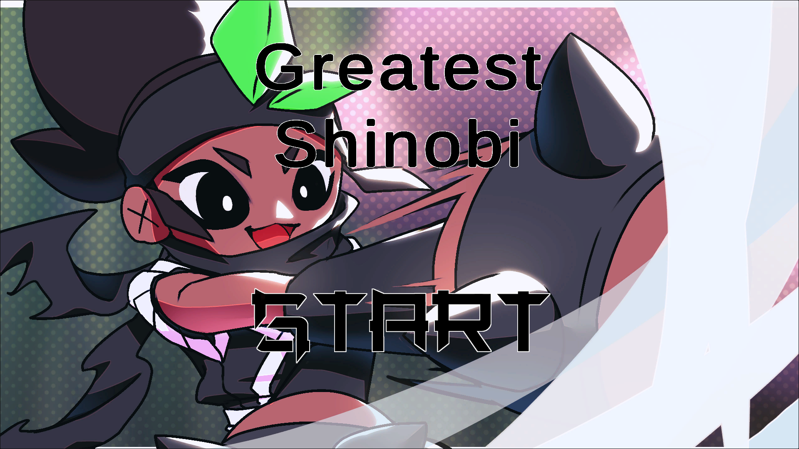
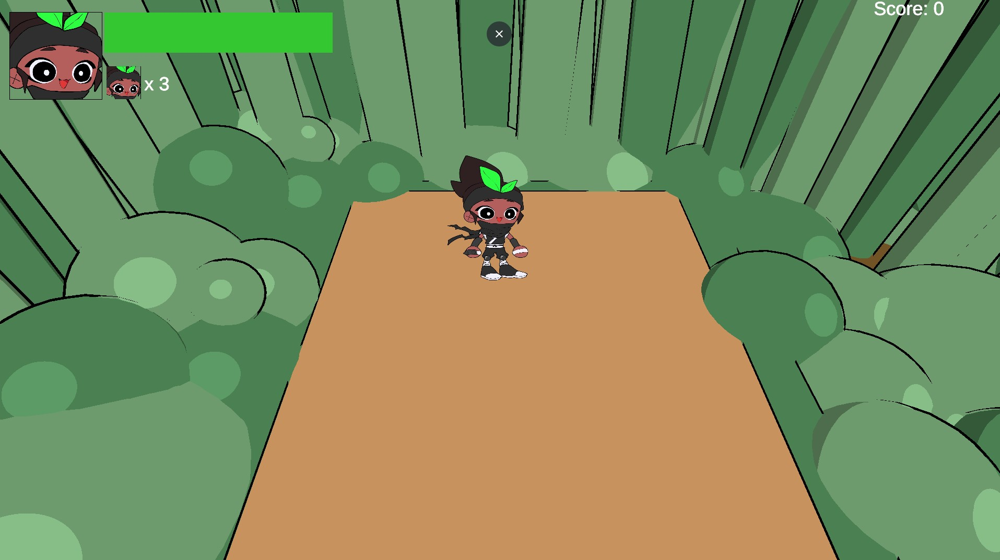
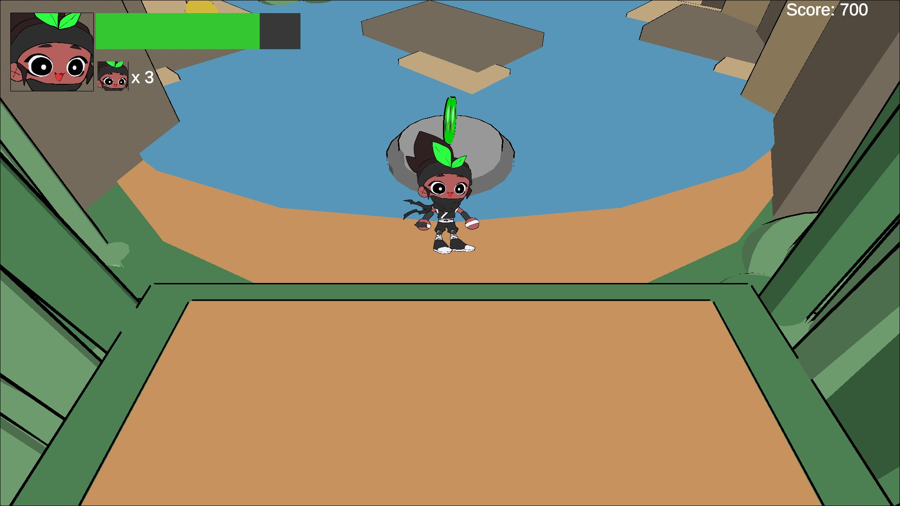
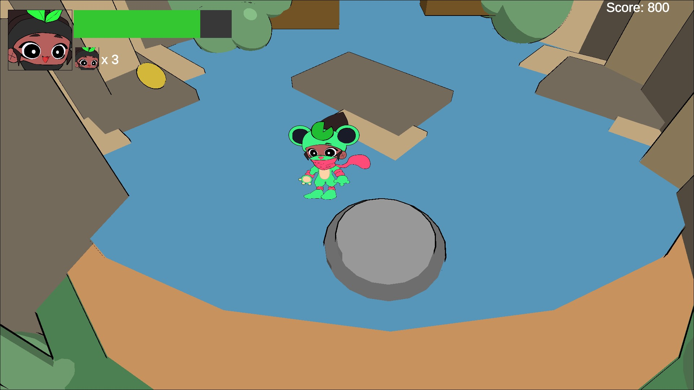
Position: Gameplay / UX Programmer.
Participated in the Beginner's Jam March 2025. The theme was Reflection.
A puzzle platformer where the main mechanic is switching between two mirrored versions of the same level, using C#.
Responsibilities included UI drafting and implementation, menu and stat tracker functionality and assistance with the mirror mechanic. Utilized the Unity game engine and C#
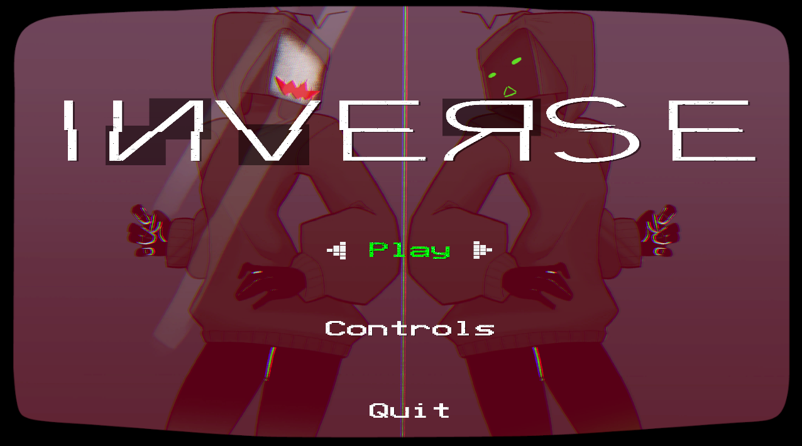
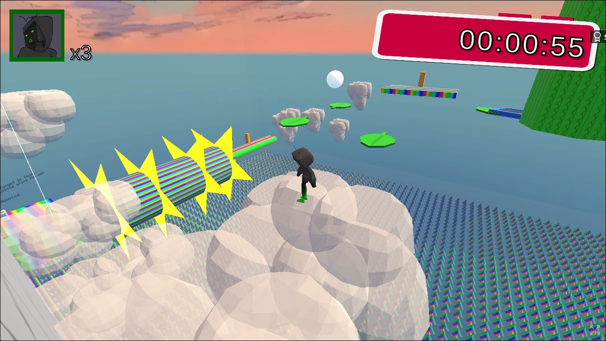
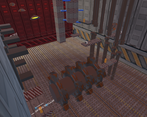
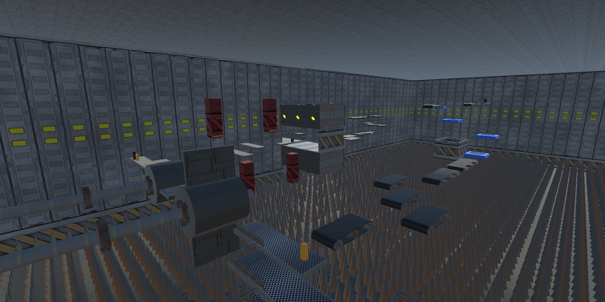
Position: UX Programmer.
Participated in the Beginner's Jam Summer 2025. The theme was Time Travel.
A platformer where the player must navigate through a training simulation full of traps using various types of time manipulation.
Responsibilities included UI drafting and implementation, menu and stat tracker functionality. Utilized the Unity game engine and C#
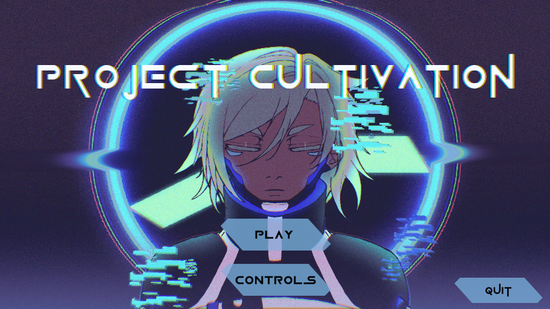
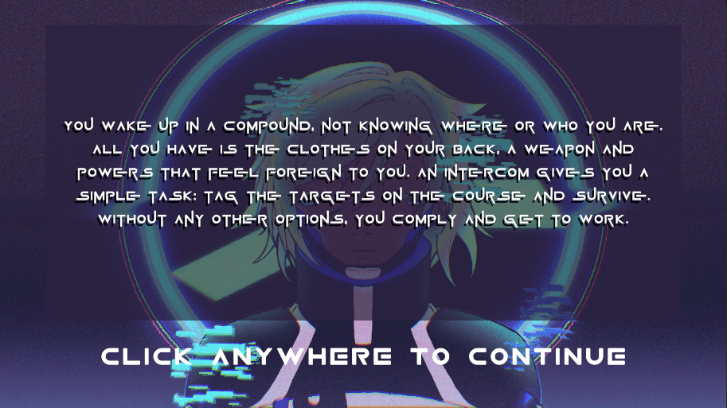
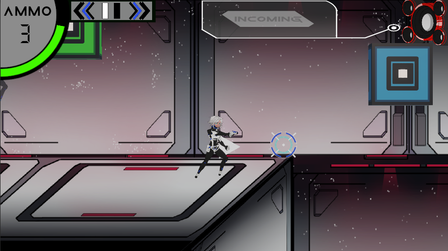
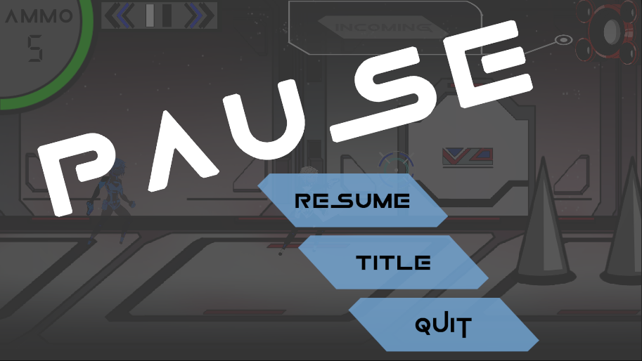
Position: UX Programmer.
Participated in the Pirate Software - Game Jam 17. The theme was Only One.
A top down puzzle game where the player must solve puzzles and collect keys to escape the haunted house they've woken up in.
Responsibilities included UI drafting / implementation and menu / inventory tracker functionality. Utilized Unreal Engine 4 and its blueprint functionality.
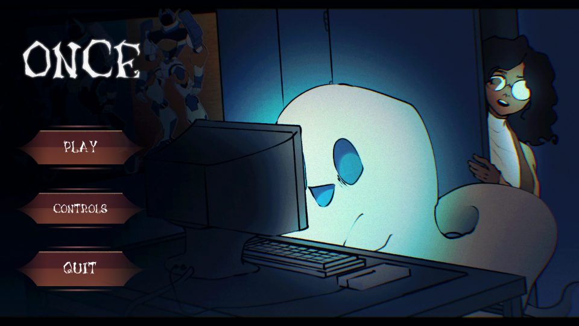
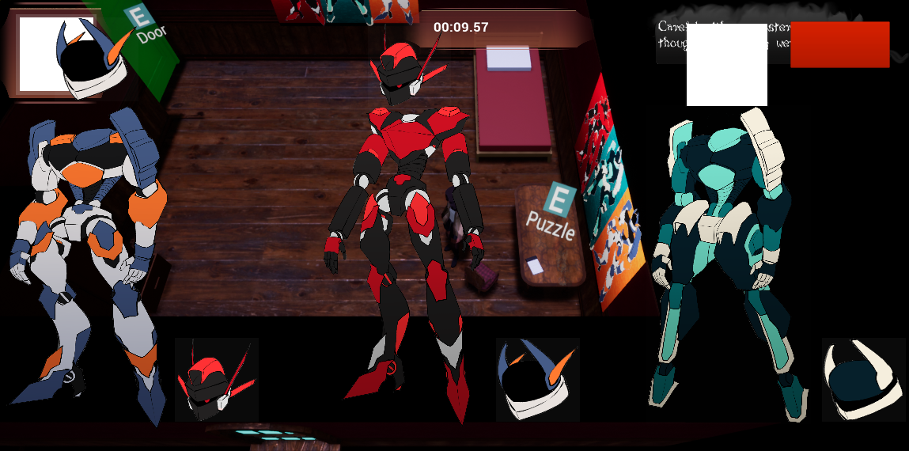
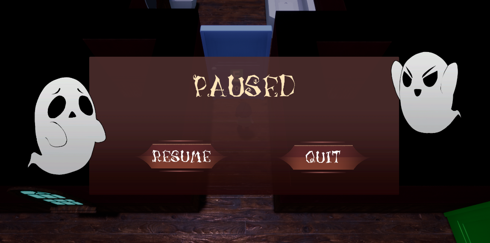
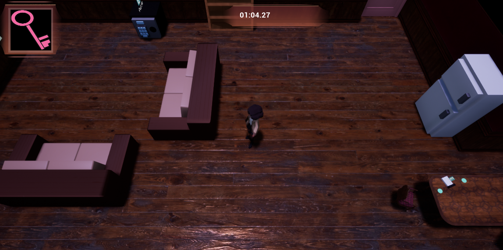